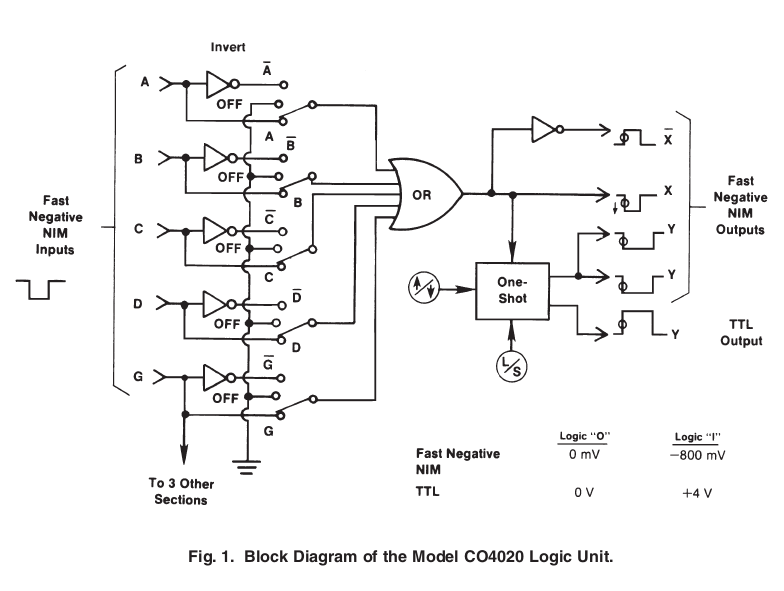

C04020 Quad 4-Input Logic Unit
可用来做多路信号的OR或者AND，可用来将NIM信号延迟，展宽。
- General-purpose logic module for AND, OR, Veto, Fan-Out, and Gating functions
- Four independent channels
- Overlap outputs and adjustable-width outputs
- 3-ns overlap resolution
- TTL and fast negative NIM outputs
The ORTEC Model CO4020 Quad 4-Input Logic Unit has the flexibility to satisfy the logic requirements of most coincidence experiments without additional logic modules. The logic functions it can perform are: coincidence (AND), anticoincidence (veto), fan-in (OR), fan-out, fast negative NIM-to-TTL conversion, and pulse lengthening. The Model CO4020 contains four identical, independent channels of 4-input logic in a single-width NIM module.
Each of the four inputs (A, B, C, and D) accepts NIM fast negative logic pulses.
Front-panel, three-position slide switches select the logic requirements separately for each input. The various combinations of logic functions that can be implemented are illustrated in Fig. 1 and in the specifications for the control switches.
The X output is a NIM fast negative logic pulse whose width is determined by the width and overlap of the active input pulses. The complement of the X output is available at the X output. The updating Y outputs can be set to trigger on either the leading edge or the trailing edge of the X output pulse. The width of the Y outputs can be adjusted from 40 ns to 40 μs in two selectable ranges. Two of the Y outputs provide NIM fast negative logic pulses. The third Y output delivers a positive TTL logic pulse that is suitable for gating ADCs and multichannel analyzers. Front-panel LEDs indicate which channel is generating an output.
Specifications
The Model CO4020 incorporates four separate channels with indentical functions. The specifications apply to each of the four channels unless stated otherwise.
PERFORMANCE
- NUMBER OF IDENTICAL CHANNELS 4.
- MAXIMUM COUNT RATE: X and X(-) Outputs 100 MHz. Y Outputs 1/(1.1 X width).
- MINIMUM PULSE OVERLAP 3 ns.
- PROPAGATION DELAY: Input to X, X(-) < 8 ns. Input to Y(Neg) < 13 ns. Input to Y(Pos) < 20 ns.
- DEAD TIME OF Y OUTPUTS 110% of width setting.
- CONTROLS AND INDICATORS WIDTH ADJUST (W) Front-panel screwdriver adjustment allows width adjustment of Y outputs. Two ranges can be selected by the front-panel slide switch: S(40–1200 ns) or L(1–40 μs).
LED INDICATOR Front-panel, red LED lights when output has been activated.
CONTROL SWITCHES Front-panel 7- by 3- position slide switch selects logic function definition, gate operation, Y output trigger point, and Y output width adjustment range as follows: Input Logic Switches (A/OFF/A(-), B/OFF/B(-), C/OFF/C(-) , D/OFF/D(-) , AND G/OFF/G(-)) As defined in Fig. 1, these switches select variations of the following basic logic functions. In the OFF position, the state of that input is ignored. With switches set to the A, B, C, D, and G positions, the module performs the OR function at the X(-) output. X = A + B + C + D + G
Setting the switches to the A(-), B(-), C(-), D(-), and G(-) positions provide the AND (coincidence) function at the X output. X = A · B · C · D · G
Changing the G(-) switch to G implements the common-gate veto (anticoincidence). X = A · B · C · D · G(-)
See Fig. 1 to determine other possible logic combinations.
Trigger Switch for Y Outputs (↓ or ↑) Allows either the negative transition (↓) or the positive transition (↑) of the X output to trigger the constant-width Y outputs.(对负的NIM信号，↓表示前沿，↑表示后沿)
Y Output Width Range Switch Sets either to S(40–1200 ns) or L(1–40 μs).
NPUTS
A, B, C, AND D INPUTS Front-panel LEMO connectors accept negative fast-NIM logic signals. Minimum Amplitude –600 mV. Minimum Width 3 ns. Input Impedance 50 Ω.
GATE INPUT(G) Front-panel LEMO connector accepts negative Fast-NIM logic signals. The GATE input is delivered to all four sections. Minimum Amplitude –600 mV. Minimum Width 3 ns. Input Impedance 50 Ω.
OUTPUTS
X AND X(-) OUTPUTS Front-panel LEMO connectors provide the noninverted (X) and the inverted (X(-)) result of the logic satisfied by the input signals. Logic requirements are set by the front-panel slide switches A/OFF/A(-), B/OFF/B(-), C/OFF/C(-), D/OFF/D(-), and G/OFF/G(-).
X and X(-) are Fast-NIM logic signals. Amplitude –20 mA. Rise Time <4 ns. Output Width Determined by duration of input signals and logic selection.
Y OUTPUTS (凸 and 凹) Front-panel LEMO connectors provide two updating Fast-NIM logic outputs (凹) and one updating positive TTL logic output (凸) per channel. Output width of all three Y outputs is set by WIDTH adjustment. Y outputs are triggered by either the negative transition (↓) or positive transition(↑) of the X overlap output as selected by the front-panel slide switch.
